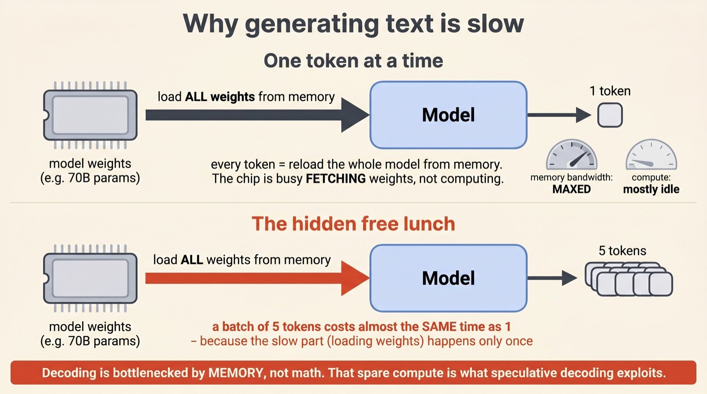
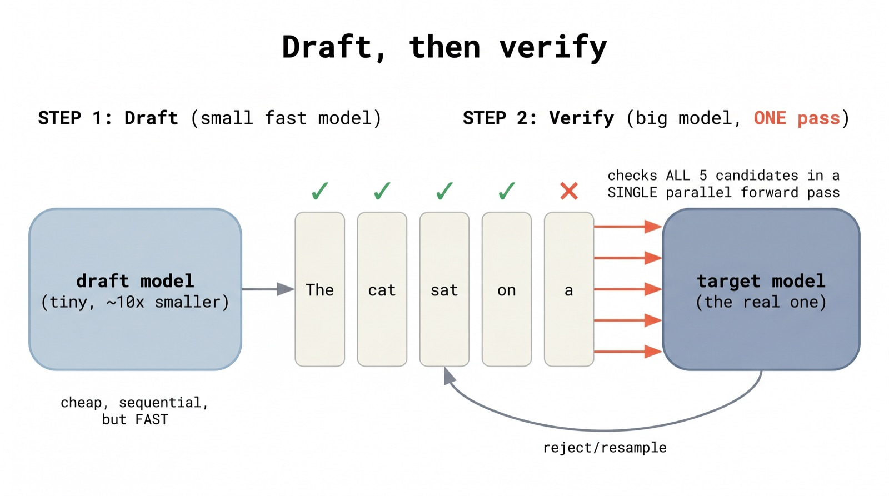
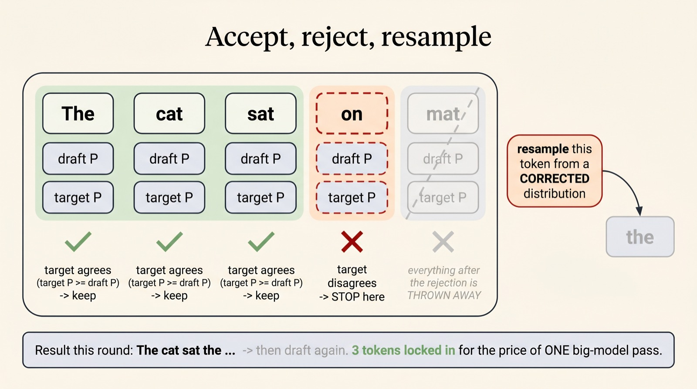
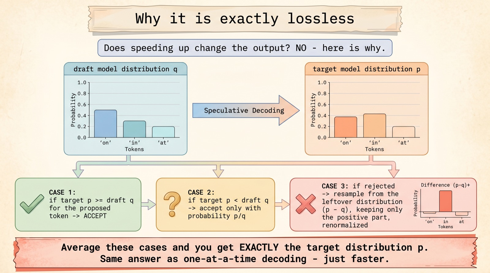
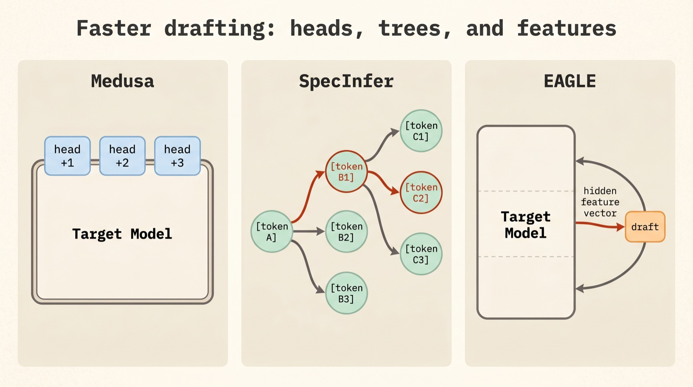
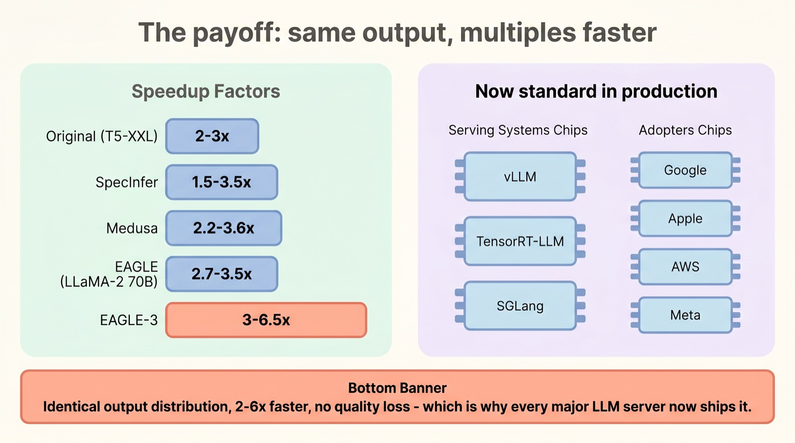

A free 3-6x speedup hiding in plain sight
Speculative
decoding
What if a tiny, fast model could guess what a giant, slow model is about to say — and the giant only had to check? That one idea makes today's LLMs run several times faster, with output that is mathematically identical. Here's how the trick works.
It sounds too good to be true: more speed, zero quality loss. The secret is a clever accept/reject rule that turns spare, idle compute into free tokens. A visual walkthrough of draft-then-verify, why it's provably lossless, and the variants — Medusa, EAGLE — shipping in every major LLM server today.
Scroll to begin.
↓
Why generating text is slow
To understand the trick, you first have to understand the strange way a language model spends its time. When a model writes, it produces one token at a time: predict a word, append it, feed everything back in, predict the next. Each of those steps requires loading the model's entire set of weights — tens of billions of numbers — out of memory and onto the chip.
Here is the counter-intuitive part. That loading is the slow step, not the math. Modern accelerators can do arithmetic far faster than they can fetch weights from memory, so at each step the chip spends most of its time just waiting for the weights to arrive and very little time actually computing. Generation is, in the jargon, memory-bandwidth bound.

This sets up a delicious opportunity. Because the bottleneck is loading weights — and a forward pass over several tokens loads those weights exactly as many times as a pass over one (just once) — verifying five tokens together costs almost the same wall-clock time as generating a single token. The hardware has spare compute sitting idle. Speculative decoding is, at heart, a scheme to use that idle compute for free.
Draft, then verify
The plan follows naturally. If one big-model pass can check many tokens as cheaply as one, then we just need candidate tokens to check. So we bring in a second, much smaller model — the draft model, often ten times smaller than the real one — whose only job is to guess ahead quickly.
The loop has two phases. First, the draft model rattles off a short run of K candidate tokens (typically 3 to 12) — cheap, because it's tiny. Then the big target model takes all those candidates and checks them in a single parallel forward pass, confirming as many as it agrees with at once.

The analogy is a fast junior writer sketching the next few words and a slow senior editor glancing over them. If the junior guessed well — and for common phrasing they usually do — the editor approves several words in the time it would have taken to write a single one. The whole speedup hinges on a simple question: when the editor disagrees, how do we stay perfectly faithful to what the editor alone would have written?
Accept, reject, resample
Verification walks along the draft's run of tokens and makes one decision at each position. Roughly: if the target model would have been at least as happy to produce that token as the draft was, the token is accepted. The model marches down the run, accepting as long as draft and target agree.
At the first token where they disagree — where the target thinks the draft's guess was too unlikely — verification stops. That token is rejected, and crucially, everything after it is thrown away, even if some later guesses would have been fine. You can't keep them, because they were written assuming the rejected token was there.

Then, at that rejection point, the target model resamples a replacement token from a specially corrected distribution (more on that in a moment), and the loop starts over with a fresh draft. The accounting still wins handily: even a partial run — three or four accepted tokens before a rejection — means several tokens generated for the cost of a single target pass. Acceptance rate is everything. The better the draft model mimics the target, the longer the accepted runs, the bigger the speedup. On predictable text ("the", "of the", boilerplate code) runs are long; on surprising text they're short.
Why it's exactly lossless
This is the part that feels like a magic trick, and it's worth slowing down for. Speculative decoding doesn't produce similar output to the slow method, or almost the same — it produces output drawn from the exact same probability distribution as if the target model had generated every token one at a time. The speedup is genuinely free of quality cost. How?
The answer is a careful piece of probability called modified rejection sampling. For a proposed token, compare the target's probability p with the draft's probability q. If p ≥ q, accept it outright. If p < q — the draft was overconfident — accept it only with probability p/q, and otherwise reject. And when you reject, you don't resample from p directly; you sample from the leftover distribution, the positive part of (p − q), renormalized.

p — so the output distribution is provably identical to one-at-a-time decoding.Work through the algebra and something beautiful falls out: the total probability of emitting any particular token — adding up the "accepted" path and the "rejected-then-resampled" path — comes to exactly p. The correction term (p − q) precisely compensates for the draft's biases. So the draft model can be crude, weird, even badly trained; it changes the speed but never the distribution. That mathematical guarantee is why production teams adopted speculative decoding so readily: there is no accuracy trade-off to argue about.
Trees, heads, and features
The basic recipe needs a separate draft model and guesses in a single straight line. Most of the research since has been about drafting better and cheaper — and three ideas stand out.
The first is to drop the second model entirely. Medusa bolts a few extra lightweight "heads" onto the target model itself, each trained to predict a token one, two, or three positions into the future. The model drafts for itself, no separate network to host or keep in sync.

The second idea is to hedge. Instead of one linear guess, SpecInfer proposes a small tree of alternative continuations and lets the target verify the whole tree in parallel, keeping the longest branch that survives — so a single wrong guess early on doesn't waste the entire run. The third, EAGLE, is the cleverest: it drafts not over words but over the target model's own internal feature vectors (from near the top of the network), reusing the big model's representations to guess far more accurately. Higher acceptance means longer runs — which is how EAGLE-3 reaches the top of the speed charts.
The payoff
Put it all together and the numbers are striking — not from a bigger model or better hardware, but purely from being smart about idle compute. The original work landed 2–3× on large models; the modern feature-level variants push much further.

What makes speculative decoding such a satisfying idea is its honesty: it doesn't cut corners. It found a resource the hardware was wasting — compute that sat idle while weights loaded — and spent it on guesses, with a rejection rule strict enough to guarantee the output never drifts from what the slow method would have produced. Same answer, several times faster, no asterisk.
It's also a glimpse of where inference research is heading. As models get larger and the memory wall gets taller, the winners increasingly aren't the ones doing more computation, but the ones doing the same computation more cleverly. A tiny model whispering guesses to a giant one is exactly that kind of cleverness — and it's now quietly running underneath a great deal of the AI you use every day.
A visual explainer of speculative decoding and its EAGLE-era variants. Explained simply, drawn out fully.